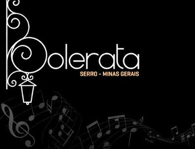
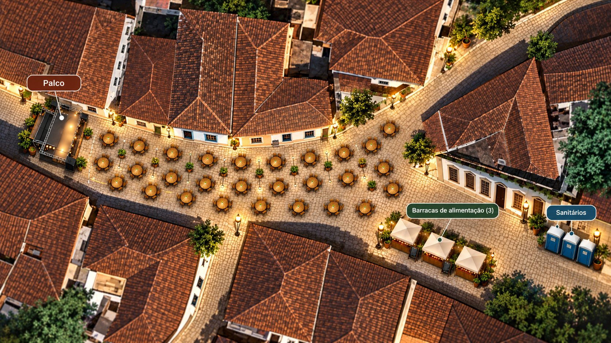

Da base da escadaria à gestão do Instituto
Um lugar digital só do Instituto Serrana: encanta por fora, organiza por dentro. A Bolerata é o primeiro grande caso de uso.
Para que serve este material
Apoio da reunião de descoberta com o Instituto Serrana. Abra em paralelo ao protótipo Penpot durante a reunião e deixe com o Instituto ao final. Reúne:
- o roteiro da reunião (60 min e 15 min);
- o design system proposto — tema institucional e tema Bolerata;
- telas-conceito de cada área (institucional, Bolerata, mapas, dashboard, CRM, financeiro);
- as perguntas de descoberta e as decisões que precisam sair da reunião;
- o checklist do protótipo antes da reunião (P0/P1/P2).
docs/discovery/03-roteiro-reuniao-descoberta.md.
Roteiro da reunião
Público primeiro (encanta e alinha a narrativa), administrativo depois (mostra o valor operacional), descoberta guiada ao final.
Versão completa — 60 minutos
| Min | Bloco | Objetivo | Decisão esperada |
|---|---|---|---|
| 0–5 | Abertura + dois ambientes | Enquadrar; explicar Portal Público × Plataforma Administrativa | Confirmar os 2 ambientes |
| 5–12 | Home Santa Rita | Encantar; alinhar a narrativa de entrada | Conceito aprovado; dono da mídia |
| 12–17 | Área institucional | História, missão, transparência, CMS | Responsável por conteúdo; docs públicos |
| 17–20 | Projetos e eventos | Base reaproveitável além da Bolerata | 2–3 projetos do MVP |
| 20–26 | Bolerata — página, temporada, edição | Identidade própria + jornada de compra | Tema separado; Sympla = fonte de venda |
| 26–33 | Dois mapas de mesa | Entender como a mesa é vendida hoje | Modelo real de venda; papel do Mapa B |
| 33–40 | Dashboard + eventos (admin) | "O que está acontecendo e o que precisa de atenção" | 6–8 indicadores; perfis de acesso |
| 40–45 | CRM + atendimento | Parar de perder contato e histórico | Canais do MVP; política de IA |
| 45–49 | Financeiro + projetos | Visão gerencial por centro de custo | Financeiro no MVP? Profundidade |
| 49–52 | Integrações | Enquadrar sem prometer | WhatsApp = Meta Cloud API |
| 52–58 | Descoberta guiada | Fechar as perguntas críticas restantes | Máximo de Pendente → Decisão |
| 58–60 | Fecho | Combinar o próximo passo | Responsável, prazos, data do gate |
Versão curta — 15 minutos
| Min | Bloco | Foco |
|---|---|---|
| 0–2 | Abertura | A frase da visão + "isto é proposta, quero a reação de vocês" |
| 2–5 | Home Santa Rita | Scroll do pé da escadaria à igreja — a narrativa está certa? |
| 5–9 | Bolerata + mapas | Edição → CTA Sympla → dois mapas. Como a mesa é vendida hoje? |
| 9–12 | Admin em 1 tela | Dashboard: ocupação, receita, pendências, falhas |
| 12–15 | Fecho | 3 perguntas obrigatórias + acessos + próximo passo |
- Como cada mesa da Bolerata é vendida hoje (item único na Sympla ou por cadeira)?
- Quem responde WhatsApp/Instagram hoje e onde ficam esses contatos?
- Quem aprova o conteúdo institucional e quais documentos podem ser públicos?
Storytelling de abertura
2–3 minutos. Enquadra a reunião como proposta a validar, não entrega a aprovar. Texto em corpo maior — pode ser lido direto da tela durante a apresentação.
O Instituto Serrana existe desde 2001 cuidando da memória, da cultura e do patrimônio do Serro. Hoje essa história está espalhada — um pouco no site, um pouco no Instagram, um pouco na Sympla, um pouco em planilhas e no WhatsApp. A ideia da plataforma é simples de dizer e grande de fazer: dar ao Instituto um lugar digital só dele, que faça duas coisas. A primeira, para quem vê de fora: contar essa história de um jeito que emociona. A gente parte da base da escadaria da Igreja de Santa Rita e sobe, degrau por degrau, até a igreja — e nessa subida aparece o que o Instituto faz: memória, cultura, patrimônio, comunidade. A segunda, para quem trabalha por dentro: parar de perder informação. Toda venda da Bolerata, todo contato, toda despesa, todo documento num lugar só. O que vou mostrar agora é uma proposta visual — um protótipo. Nada está fechado. O objetivo de hoje é a reação de vocês: o que faz sentido, o que muda, o que falta.
Design System
Dois temas que compartilham a mesma estrutura (tokens, componentes, estados), com linguagem visual diferente. Fonte: docs/design/01-penpot-brief.md. Proposta — a paleta final é validada no Penpot e no navegador.
Tema institucional — "pedra, cal e jardim"
Tema Bolerata — "noite, ouro e marfim"
Tipografia
Tokens (camadas)
| Camada | Exemplos | Papel |
|---|---|---|
primitive.* | cores cruas, escala tipográfica | valores brutos, nunca usados direto na tela |
semantic.* | bg.page, text.primary, action.primary, status.success/warning/danger | o que a tela realmente consome |
component.* | button.bg, card.border | ajuste fino por componente |
motion.* / breakpoint.* | durações, easings, larguras | animação e responsividade |
Estados de mesa (compartilhados pelos dois mapas)
Home — experiência Santa Rita
A home é uma pequena subida da escadaria até a igreja. Começa embaixo; nunca diante da fachada. A igreja fica como ponto focal o tempo todo.
Cultura, memória e desenvolvimento no coração do Serro
Role a página para subir a escadaria até a Igreja de Santa Rita.
Fundo com foto real da escadaria/igreja (docs/assets/img/igreja-santa-rita.jpg) — o Penpot traz os 6 estados do storyboard com transição por scroll.
Os 6 estados (storyboard)
| Estado | Momento | Texto (rascunho) |
|---|---|---|
| 0 | Base da escadaria | "Instituto Serrana — Cultura, memória e desenvolvimento no coração do Serro." |
| 1 | Entrada | "Cada degrau guarda uma história." |
| 2 | Subida | "Memória • Cultura • Patrimônio • Comunidade" |
| 3 | Meio | Apresentação institucional curta |
| 4 | Últimos degraus | "Preservar o passado. Mobilizar o presente. Construir novos caminhos." |
| 5 | Chegada frontal | Identidade do Instituto + CTAs (Conhecer · Apoiar · Bolerata) |
prefers-reduced-motion: imagem estática da escadaria + os mesmos textos + navegação convencional. A experiência não pode bloquear o scroll nem ser longa demais.
Perguntas
- Pendente A sequência Memória · Cultura · Patrimônio · Comunidade representa bem a atuação?
- Pendente Vocês têm foto/vídeo da escadaria e da igreja em alta resolução? Direitos de uso?
- Pendente Há restrição de uso da imagem da Igreja de Santa Rita (bem tombado / religioso)?
O Instituto · Áreas · Transparência
Estrutura nossa, conteúdo do Instituto — tudo editável pela equipe via CMS, sem depender de programador.
Quem somos rascunho de redação
Organização civil sem fins lucrativos e apartidária, criada em 27 de setembro de 2001, dedicada ao patrimônio, à memória e ao desenvolvimento do Serro e sua região.
Toda etiqueta "rascunho" existe para o texto não ser lido como oficial na reunião.
Perguntas
- Pendente Missão, visão e valores — qual a redação oficial?
- Pendente Quem é a diretoria atual? Foto e bio curta?
- Pendente Confirmam "Instituto Serrana Digital" como nome da plataforma?
- Pendente Quais documentos podem ser públicos? Quem aprova publicação?
- Pendente Quem administra o domínio? Há interesse em migrar para
.org.br? Confirmado sóinstitutoserrana.orgexiste hoje.
Bolerata
Cara de evento — mais escura, mais elegante — dentro do mesmo site. Primeiro grande caso de uso: se funciona para a Bolerata, funciona para qualquer evento futuro.

Bolerata — Serro, uma noite de boleros no casario
Reservar / Comprar → SymplaO botão de compra leva ao fluxo oficial da Sympla. A plataforma não processa pagamento nesta etapa.
Página de uma edição contém
Perguntas
- Confirmado A Bolerata já tem logo (lamparina + clave de sol) — aplicado aqui no nav e no hero. Pendente paleta de cores e tipografia oficiais para o design system.
- Pendente Quantas edições tem a temporada? Datas e locais já definidos?
- Pendente Há material (fotos/vídeos/arte) das edições anteriores?
- Proposta Sympla é a fonte oficial de venda na primeira etapa — confirmam?
Os dois mapas de mesa
O mapa ilustrado é para o público se situar. O mapa operacional é a ferramenta de quem opera. Os dois compartilham os mesmos estados de mesa.

Mapa A a partir da planta real enviada pelo Instituto — palco no início da rua, mesas ao longo do trecho, barracas de alimentação e banheiros químicos do lado da sombra. O Mapa B tem painel lateral: ao clicar numa mesa, mostra comprador, pedido, status e histórico.
Perguntas (reservar 7 min)
- Pendente Cada mesa é um item único na Sympla, ou são ingressos por cadeira?
- Pendente Existem setores (frente/fundo, coberto/descoberto, preços diferentes)?
- Pendente Capacidade por mesa varia? Cadeiras extras?
- Pendente Como são tratadas cortesias e mesas de patrocinador?
- Pendente Existem mesas bloqueadas? Quem decide?
- Pendente Existe planta oficial / medidas / foto aérea? O layout muda por edição?
- Pendente Como é o check-in na porta hoje? E cancelamento / troca de mesa?
Dashboard
"Abro e sei o que está acontecendo e o que precisa de atenção." Sem gráfico decorativo.
Ocupação da 3ª edição
Pedidos recentes (Sympla)
Precisa de atenção
Eventos e edições
21 nov · Rua da Fundiçãoaberta
outubroencerrada
setembroesgotada
contínuoem andamento
Lista + página de um evento: bloco Eventos (admin) — protótipo P1.
Sincronização Sympla
A plataforma lê pedidos/participantes da Sympla — não processa pagamento nesta etapa.
Ocupação — 3ª edição
Mapa completo com os 6 estados de mesa: bloco Mapas de mesa (Mapa A + Mapa B).
Relatórios
Escopo de RPT-001 — protótipo P2.
Status das integrações
Detalhe de cada integração: bloco Integrações.
Clique nos itens do menu lateral do mockup — Dashboard, Eventos, Sympla, Mesas, Relatórios e Integrações trocam de painel aqui mesmo; CRM e Financeiro abrem a tela completa. Blocos de DASH-001: próxima edição, ocupação, receita bruta/líquida, despesas, resultado, pedidos, atendimento, falhas de integração, tarefas, atividade.
Perguntas
- Pendente Quais números a diretoria acompanha hoje, e onde?
- Pendente Quem usa o dashboard — diretoria, produção, os dois?
- Pendente "Resultado" (receita − despesa) é visível para todos os perfis ou restrito?
CRM e atendimento
A mesma pessoa que compra mesa este ano pode ser patrocinadora no ano que vem. A plataforma trata como uma pessoa só, com histórico, em todos os canais.
Novo
Instagram · quer mesa p/ 6
WhatsApp · dúvida data
Link enviado
comprador3ª edição
Compra identificada
compradordoadorMesa 15 · Sympla
Pós-venda
patrocinadorMesa 7 · enviar recibo
Ficha 360º — M. Souza
Atendimento · conversa aberta
Pipeline de CRM-001 · ficha de CRM-003 · atendimento de MSG-002. IA assiste; humano decide (AI-002).
Perguntas
- Pendente Quem responde WhatsApp / Instagram hoje? Quantas pessoas?
- Pendente Onde ficam os contatos hoje (celular, planilha, Sympla)?
- Pendente Quem pode ver todos os contatos / movimentar o CRM?
- Pendente Topam IA sugerindo resposta (com revisão humana)? Algum limite?
Financeiro e projetos
Visão gerencial por centro de custo — não substitui a contabilidade. No fim da Bolerata, o resultado real dela sem montar planilha.
Por centro de custo
Previsto × realizado — Bolerata
Centros de custo de FIN-001. Cada lançamento amarra a evento/projeto/patrocínio. Anexo de comprovante por lançamento.
Perguntas
- Pendente Como as despesas são vinculadas a evento/projeto hoje?
- Pendente Existe contador? Ele terá acesso (perfil só leitura)?
- Pendente Vocês emitem NFS-e? Qual município/sistema? (não automatizamos sem validar)
- Pendente Existem editais/convênios com regras de prestação de contas?
Integrações — enquadrar sem prometer
| Integração | Como apresentar | O que NÃO dizer |
|---|---|---|
| Sympla | Fonte oficial de venda e ingresso na 1ª etapa. A plataforma lê pedidos, participantes, valores, check-in e organiza no CRM/dashboard/financeiro. | Que a Sympla deixa criar pedido, segurar mesa ou fazer checkout pelo nosso site — a doc pública atual não garante. |
| Caminho oficial = Meta Cloud API. A plataforma troca de provedor sem reescrever nada. | Apresentar Evolution / megaAPI como o plano — são alternativas com aceite de risco (modo não oficial, sujeito a bloqueio). | |
| DMs entram na mesma fila de atendimento do WhatsApp. | Recursos além de mensagens sem confirmar conta profissional + Meta Business. | |
| n8n | O "encanamento" que liga a plataforma aos serviços e roda tarefas agendadas. | Que regras críticas de dinheiro/permissão ficam nele — não ficam. |
| IA | Resume conversa, classifica, sugere resposta, cuida de FAQ. | "IA autônoma" — nunca decide desconto, reembolso, preço ou nota fiscal. |
Perguntas
- Pendente Já têm conta Meta Business e número de WhatsApp comercial dedicado?
- Pendente A conta de Instagram é profissional e ligada a uma página?
- Pendente Existe contrato Sympla ativo? Quem tem acesso de produtor / token de API?
Decisões esperadas
Meta: fechar o Discovery Gate D1. Uma pessoa dedicada à Matriz de validação durante toda a reunião.
| # | Decisão |
|---|---|
| 1 | Nome e posicionamento da plataforma |
| 2 | Conceito da Home Santa Rita (aprovado ou ajustes claros) |
| 3 | Tratamento visual separado da Bolerata |
| 4 | Escopo do MVP — o que entra e o que fica para depois |
| 5 | Papel do mapa de mesa no MVP (operacional × espelho) |
| 6 | Sympla como fonte de venda na 1ª etapa (confirmação do Instituto) |
| 7 | Caminho oficial do WhatsApp = Meta Cloud API |
| 8 | Canais de atendimento do MVP |
| 9 | Financeiro no MVP — sim/não e profundidade |
| 10 | Perfis de acesso (quem vê o quê) — versão inicial |
| 11 | Responsável por conteúdo institucional |
| 12 | Ponto de contato do Instituto para o projeto |
| 13 | Decisão sobre domínio (.org × .org.br) |
| 14 | Data do próximo gate |
docs/discovery/02-decisions-assumptions.md + ajuste do PRD se impactado.
Documentos e acessos a solicitar
Entregar por escrito ao final, com um responsável e um prazo.
Checklist do protótipo Penpot
P0 obrigatório · P1 importante · P2 opcional. Estado salvo no navegador.